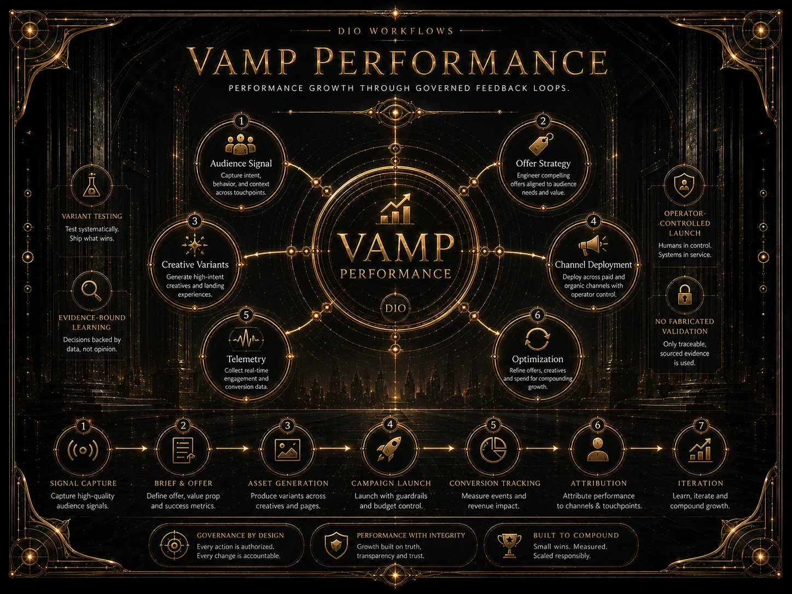

01
REVIEW-READY DELIVERABLE
Criteria-to-evidence map
Achievements and authorised supporting evidence mapped against the supplied objectives, task agreement or promotion framework.
PERFORMANCE & ACHIEVEMENT
Stop reconstructing a year the week before review.
Built forProfessionals, academics, managers, HR evidence teams and promotion candidates who need achievement evidence mapped before the review meeting begins.
 VAMPPERFORMANCECRITERIA-MAPPEDEVIDENCE SNAPSHOTHUMAN JUDGMENT
VAMPPERFORMANCECRITERIA-MAPPEDEVIDENCE SNAPSHOTHUMAN JUDGMENTHOW VAMP WORKS
Signals → brief → assets → campaign / performance evidence → telemetry → attribution → optimisation
VAMP turns signals and declared goals into bounded performance work. Spending, publication, ratings and other consequential actions remain separately gated.

VAMP / FILM
Performance evidence, mapped into a governed review surface.
WATCH THE FILM ON YOUTUBE ↗WHAT YOU ACTUALLY GET
VAMP turns authorised achievement records into a reviewable performance evidence view. It prepares the case; it does not manufacture the rating.
Achievements and authorised supporting evidence mapped against the supplied objectives, task agreement or promotion framework.
Visible areas where an objective or criterion lacks adequate supporting evidence before review.
A bounded, inspectable package prepared for the manager, committee or authorised reviewer.
EVIDENCE, NOT PROMISES
Controlled engineering evidence is shown as engineering evidence. Commercial validation is earned from customers.
Promotion evidence route ↗ — controlled route proven. It maps criteria and evidence while leaving promotion and competence decisions with authorised humans.
Professional-development evidence route ↗ — controlled route proven. It prepares portable CPD evidence without awarding credit or certifying competence.
VAMP prepares evidence snapshots. It does not rate employees, award promotion, certify competence, determine employment outcomes or execute HR actions.
Authorised evidence is mapped to declared criteria and gaps are made visible for review. Consequential employment judgment is outside the software boundary.
The controlled routes demonstrate engineering capability. They do not by themselves prove independent customer demand, repeat usage or willingness to pay.
WHAT RUNS UNDERNEATH
BOUNDED DELIVERY
One task agreement, performance or promotion framework, review period and the achievement evidence you are authorised to use.
VAMP maps evidence to objectives or criteria, exposes gaps and prepares the bounded review view with an inspectable trail.
Criteria-to-evidence mapping, gap register and a review-ready performance evidence snapshot.
Ratings, promotion, competence, employment outcomes and HR action remain with the authorised people and processes.
PILOT SCOPE
The launch pilot is intentionally narrow. Recurring performance operations, broader evidence ingestion and organisational integrations are scoped separately after the bounded case.
PRODUCTION REALITY
Optimisation may change what DIO recommends next. It does not grant permission to execute an external action.

AI · DIO PRESENCE CORE
Vesper opens with VAMP Performance context already attached. Give her the framework, review period and evidence problem; she will route the bounded handoff.